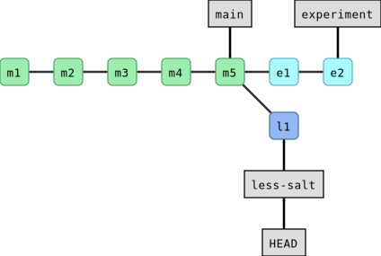
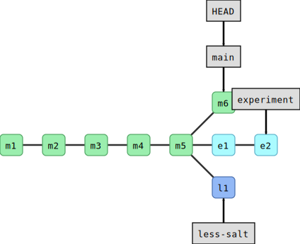
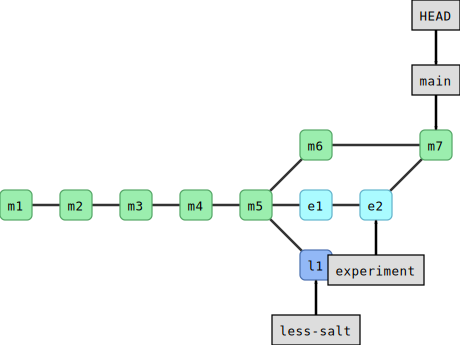
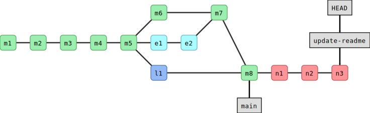

Commits are depicted here as little boxes with abbreviated hashes.
Here the branch main points to a commit.
“HEAD” is the current position (remember the recording head of tape
recorders?). When we say HEAD, we mean those literal letters -
this isn’t a placeholder for something else.
When we talk about branches, we often mean all parent commits, not only the commit pointed to.
We typically need at least one version of the code to “work” (to compile, to give expected results, …).
At the same time we work on new features, often several features concurrently.
Often they are unfinished.
We need to be able to separate different lines of work really well.
The strength of version control is that it permits the researcher to isolate
different tracks of work, which can later be merged to create a composite
version that contains all changes:
Main line development is often called main or master.
Other than this convention there is nothing special about main or master, it is a branch like any other.
Commits form a directed acyclic graph (we have left out the arrows to avoid confusion about the time arrow).
A group of commits that create a single narrative are called a branch.
There are different branching strategies, but it is useful to think that a branch
tells the story of a feature, e.g. “fast sequence extraction” or “Python interface” or “fixing bug in
matrix inversion algorithm”.
An important alias
We will now define an alias in Git, to be able to nicely visualize branch
structure in the terminal without having to remember a long Git command
(more details about aliases are given
in a later section). This is extensively used in the rest of this
and other lessons:
We do the following part together. Encourage participants to type along.
It is possible to create and merge branches directly on GitHub
However, we do not have screenshots for that in this episode
But if you prefer to work in the browser, please try it
Please contribute screenshots to this lesson
Let’s create a branch called experiment where we add cilantro to ingredients.txt
(text after “#” are comments and not part of the command).
$ gitbranchexperimentmain# creates branch "experiment" from "main"$ gitswitchexperiment# switch to branch "experiment"$ gitbranch# list all local branches and show on which branch we are
Note
In case gitswitch does not work, your Git version might be older than from 2019.
On older Git it is gitcheckout instead of gitswitch.
Verify that you are on the experiment branch (note that gitgraph also
makes it clear what branch you are on: HEAD->branchname):
$ gitbranch
* experiment main
This command shows where we are, it does not create a branch.
Then add 2 tbsp cilantro on top of the ingredients.txt:
Stage this and commit it with the message “let us try with some cilantro”.
Then reduce the amount of cilantro to 1 tbsp, stage and commit again with “maybe little bit less cilantro”.
We have created two new commits:
$ gitgraph
* bcb8b78 (HEAD -> experiment) maybe little bit less cilantro* f6ec7b7 let us try with some cilantro* e7cf023 (main) don't forget to enjoy* 79161b6 add half an onion* a3394e3 adding README* 3696246 adding instructions* f146d25 adding ingredients
The branch experiment is two commits ahead of main.
In this exercise, you will create another new branch and few more commits.
We will use this in the next section, to practice
merging. The goal of the exercise is to end up with 3 branches.
Change to the branch main.
Create another branch called less-salt.
Note! makes sure you are on main branch when you create the less-salt branch.
A safer way would be to explicitly mention to create from the main branch
as shown below:
$ gitbranchless-saltmain
Switch to the less-salt branch.
On the less-salt branch reduce the amount of salt.
Commit your changes to the less-salt branch.
Use the same commands as we used above.
We now have three branches (in this case HEAD points to less-salt):
$ gitbranch
experiment* less-salt main$ gitgraph
* bf28166 (HEAD -> less-salt) reduce amount of salt| * bcb8b78 (experiment) maybe little bit less cilantro| * f6ec7b7 let us try with some cilantro|/* e7cf023 (main) don't forget to enjoy* 79161b6 add half an onion* a3394e3 adding README* 3696246 adding instructions* f146d25 adding ingredients
Here is a graphical representation of what we have created:

Now switch to main.
In a new commit, improve the README.md file (we added the word “Guacamole”):
# Guacamole recipe
This is an exercise repository.
Now you should have this situation:
$ gitgraph
* b4af65b (HEAD -> main) improve the documentation| * bf28166 (less-salt) reduce amount of salt|/| * bcb8b78 (experiment) maybe little bit less cilantro| * f6ec7b7 let us try with some cilantro|/* e7cf023 don't forget to enjoy* 79161b6 add half an onion* a3394e3 adding README* 3696246 adding instructions* f146d25 adding ingredients

And for comparison this is how it looks on GitHub.
It turned out that our experiment with cilantro was a good idea.
Our goal now is to merge experiment into main.
Branch-2: Merge branches
Merge experiment and less-salt back into main following the lesson below
until the point where we start deleting branches.
If you got stuck in the above exercises or joined later
If you got stuck in the above exercises or joined later,
you can apply the commands below.
But skip this box if you managed to create branches.
$ cd..# step out of the current directory$ gitclonehttps://github.com/coderefinery/recipe-before-merge.git
$ cdrecipe-before-merge
$ gitswitchexperiment
$ gitswitchless-salt
$ gitswitchmain
$ gitremoteremoveorigin
$ gitgraph
Or call a helper to un-stuck it for you.
First we make sure we are on the branch we wish to merge into:
$ gitbranch
experiment less-salt* main
Then we merge experiment into main:
$ gitmergeexperiment

We can verify the result:
$ gitgraph
* 81fcc0c (HEAD -> main) Merge branch 'experiment'|\| * bcb8b78 (experiment) maybe little bit less cilantro| * f6ec7b7 let us try with some cilantro* | b4af65b improve the documentation|/| * bf28166 (less-salt) reduce amount of salt|/* e7cf023 don't forget to enjoy* 79161b6 add half an onion* a3394e3 adding README* 3696246 adding instructions* f146d25 adding ingredients
What happens internally when you merge two branches is that Git creates a new
commit, attempts to incorporate changes from both branches and records the
state of all files in the new commit. While a regular commit has one parent, a
merge commit has two (or more) parents.
To view the branches that are merged into the current branch we can use the command:
$ gitbranch--merged
experiment* main
We are also happy with the work on the less-salt branch. Let us merge that
one, too, into main:
$ gitbranch# make sure you are on main$ gitmergeless-salt
If the same file is changed in both branches, Git attempts to incorporate both
changes into the merged file. If the changes overlap then the user has to
manually settle merge conflicts (we will do that later).
We observe that when deleting branches,
only the pointers (“sticky notes”) disappeared, not the commits.
Git will not let you delete a branch which has not been reintegrated unless you
insist using gitbranch-D. Even then your commits will not be lost but you
may have a hard time finding them as there is no branch pointing to them.
The following exercises are more advanced, absolutely no problem to postpone them to a
few months later. If you give them a go, keep in mind that you might run into conflicts,
which we will learn to resolve in the next section.
(optional) Branch-3: Perform a fast-forward merge
Create a new branch from main and switch to it.
Create a couple of commits on the new branch (for instance edit README.md):

Now switch to main.
Merge the new branch to main.
Examine the result with gitgraph.
Have you expected the result? Discuss what you see.
Solution
You will see that in this case no merge commit was created and Git merged the
two branches by moving (fast-forwarding) the “main” branch (label) three
commits forward.
This was possible since one branch is the ancestor of the other and their
developments did not diverge.
A merge that does not require any merge commit is a fast-forward merge.
(optional) Branch-4: Rebase a branch (instead of merge)
As an alternative to merging branches, one can also rebase branches.
Rebasing means that the new commits are replayed on top of another branch
(instead of creating an explicit merge commit).
Note that rebasing changes history and should not be done on public commits!
Create a new branch, and make a couple of commits on it.
Switch back to main, and make a couple of commits on it.
Inspect the situation with gitgraph.
Now rebase the new branch on top of main by first switching to the new branch, and then gitrebasemain.
Inspect again the situation with gitgraph. Notice that the commit hashes have changed - think about why!
Solution
You will notice two things:
History is now linear and does not contain merge commits.
All the commit hashes that were on the branch that got rebased, have
changed. This also demonstrates that gitrebase is a command that alters
history. The commit history looks as if the rebased commits were all done
after the main commits.
A tag is a pointer to a commit but in contrast to a branch it does not ever
move when creating new commits later.
It can be useful to think of branches as sticky notes and of tags as
commemorative plaques.
We use tags to record particular states or milestones of a project at a given
point in time, like for instance versions (have a look at semantic versioning,
v1.0.3 is easier to understand and remember than 64441c1934def7d91ff0b66af0795749d5f1954a).
There are two basic types of tags: annotated and lightweight.
Use annotated tags since they contain the author and can be cryptographically signed using
GPG, timestamped, and a message attached.
Let’s add an annotated tag to our current state of the guacamole recipe:
$ gittag-anobel-2023-m"recipe I made for the 2023 Nobel banquet"
As you may have found out already, gitshow is a very versatile command. Try this:
$ gitshownobel-2023
For more information about tags see for example
the Pro Git book chapter on the
subject.
Let us pause for a moment and recapitulate what we have just learned:
$ gitbranch# see where we are$ gitbranchNAME# create branch NAME$ gitswitchNAME# switch to branch NAME$ gitmergeNAME# merge branch NAME (to current branch)$ gitbranch-dNAME# delete branch NAME$ gitbranch-DNAME# delete unmerged branch NAME
Since the following command combo is so frequent:
$ gitbranchNAME# create branch NAME$ gitswitchNAME# switch to branch NAME
There is a shortcut for it:
$ gitswitch--createNAME# create branch NAME and switch to it
$ gitswitch--createnew-feature# create branch, switch to it$ gitcommit# work, work, work, ..., and test$ gitswitchmain# once feature is ready, switch to main$ gitmergenew-feature# merge work to main$ gitbranch-dnew-feature# remove branch
Sometimes you have a wild idea which does not work.
Or you want some throw-away branch for debugging:
$ gitswitch--createwild-idea# create branch, switch to it, work, work, work ...$ gitswitchmain# realize it was a bad idea, back to main$ gitbranch-Dwild-idea# it is gone, off to a new idea
Branch-5: Test your understanding
Which of the following combos (one or more) creates a new branch and makes a commit to it?
Both 2 and 3 would do the job. Note that in 2 we first stage the file, and then create the
branch and commit to it. In 1 we create the branch but do not switch to it, while in 4 we
don’t give the --create flag to gitswitch to create the new branch.
Keypoints
A branch is a division unit of work, to be merged with other units of work.
A tag is a pointer to a moment in the history of a project.
{kind=link}

{kind=link}